🚀Primeiros passos
O MGI PRO funciona no navegador do celular, do tablet ou do computador, em mgipro.app. Não é preciso baixar nada da loja: dá para instalar como aplicativo na tela inicial.
Criar a conta e entrar
- Acesse mgipro.app e toque em Criar conta.
- Entre com o Google ou preencha nome da empresa, seu nome, e-mail e senha (mínimo de 6 caracteres).
- Leia e aceite os Termos de Uso e a Política de Privacidade. O teste grátis começa na hora, sem cartão.
- Nas próximas vezes, use Entrar. Esqueceu a senha? Toque em Esqueci minha senha e siga o e-mail recebido.
Instalar na tela inicial
- Android (Chrome): abra mgipro.app, toque nos três pontos e escolha Adicionar à tela inicial ou Instalar aplicativo.
- iPhone (Safari): abra mgipro.app, toque em Compartilhar e depois em Adicionar à Tela de Início.
- Abra pelo ícone do MGI PRO: o aplicativo ocupa a tela toda e fica mais rápido.
Cadastrar a obra
- No topo da tela, toque no seletor de obra e escolha + Nova obra.
- Informe o nome da obra e salve. O número de obras depende do plano contratado.
- Para trocar de obra, use o mesmo seletor. Tudo o que você registrar fica ligado à obra selecionada.
- Na primeira vez que abrir o Mapa da obra, escolha o tipo: rede linear (saneamento, por trechos e PVs) ou edificação (por torre, pavimento e unidade).
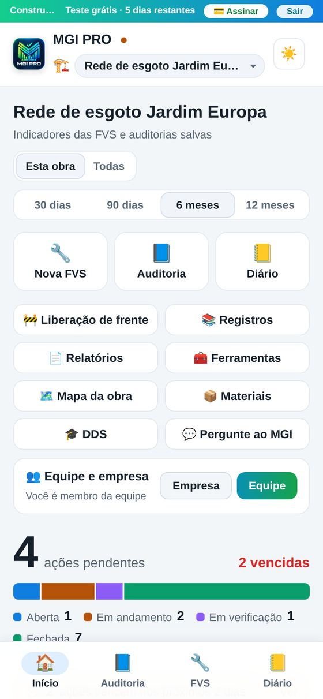
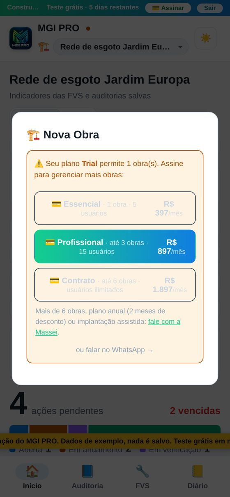
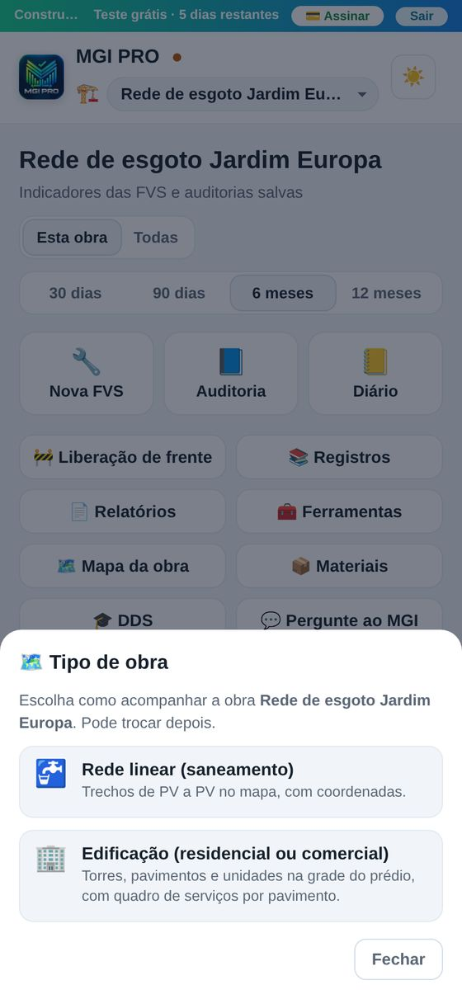
A barra de baixo leva a Início, Auditoria, FVS e Diário. As demais ferramentas ficam nos atalhos da tela inicial.
Em qualquer tela, toque em ❓ Como usar para abrir a parte deste manual sobre ela.
🏢Empresa, logos e carimbo das fotos
Os dados da empresa aparecem no cabeçalho de todos os PDFs e no carimbo das fotos. Só o administrador da empresa pode alterar.
- Na tela inicial, em Equipe e empresa, toque em Empresa.
- Envie o logo da empresa e preencha razão social, CNPJ e contrato.
- Se quiser, envie um segundo logo, que sai à direita nos PDFs (por exemplo, o do contratante).
- Em Logo e contrato por obra, defina logo e contrato diferentes para cada obra, quando necessário.
- Em Carimbo nas fotos, escolha o que entra no carimbo. Data, hora, obra e serviço sempre entram.
- Informe os e-mails para o resumo mensal automático, separados por vírgula, e toque em Salvar.
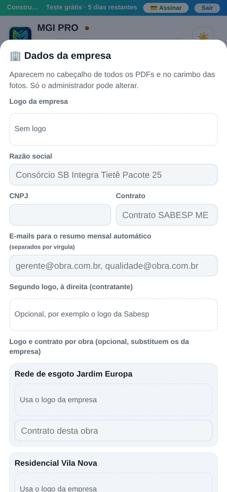
👥Equipe e acesso da fiscalização
- Na tela inicial, em Equipe e empresa, toque em Equipe.
- Toque em + Convidar pessoa da equipe. O aplicativo cria um link de convite.
- Envie o link por WhatsApp ou copie e mande como preferir. A pessoa cria a senha e já entra na empresa.
- Para o fiscal ou o cliente acompanhar sem alterar nada, use + Convidar fiscalização (somente consulta).
- Para tirar o acesso de alguém, toque em Remover ao lado do nome. Convites pendentes podem ser cancelados.
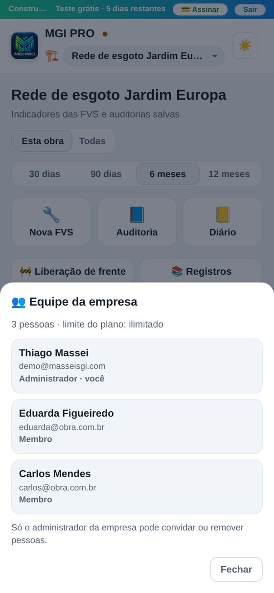
Administrador: tudo, inclusive empresa, equipe e plano.
Membro: registra e consulta.
Fiscalização: só consulta e baixa PDFs. Não vê os botões de voz nem de edição.
🏠Tela inicial e indicadores
A tela inicial mostra a situação da obra e o que precisa de decisão.
- Escolha Esta obra ou Todas e o período (30 dias, 90 dias, 6 meses ou 12 meses).
- Os cartões mostram ações vencidas, ações fechadas no prazo, tempo médio para fechar, conformidade, inspeções e diários do período.
- O quadro Para decidir esta semana resume, em linguagem direta, o que exige atenção.
- A barra de ações pendentes mostra quantas estão abertas, em andamento, em verificação e fechadas. Toque para ver a lista.
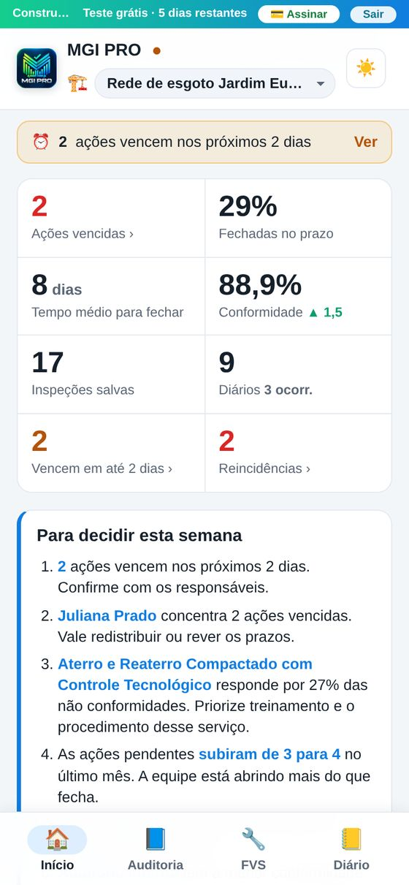
📒Diário de obra
O diário pode ser preenchido em cerca de um minuto. Você conta como foi o dia e a inteligência artificial organiza; depois é só conferir e assinar.
Preencher falando
- Toque em Diário na barra de baixo. A data, a obra, o responsável e os turnos já vêm preenchidos.
- No cartão Diário em 1 minuto, toque em 🎤 Contar como foi o dia. O microfone abre ouvindo.
- Fale do jeito que falaria no rádio: clima, equipe, máquinas e horas, o que foi feito, onde e quanto, visitas e problemas. Toque de novo para parar.
- Toque em ✨ Preencher o diário. A IA separa equipe, equipamentos, atividades e ocorrências.
- Confira os campos, corrija o que precisar e colha as assinaturas.
- Toque em 💾 Salvar registro do dia.
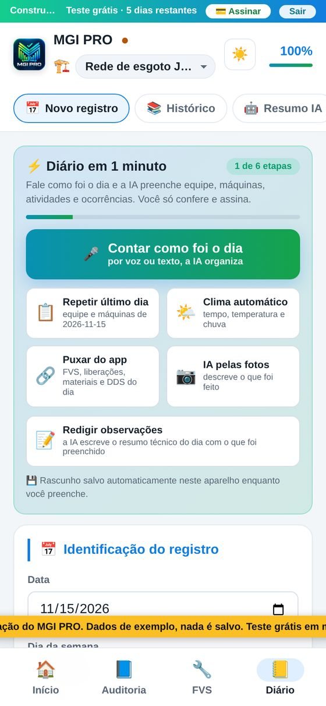
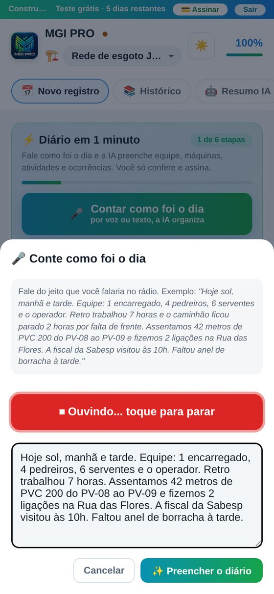
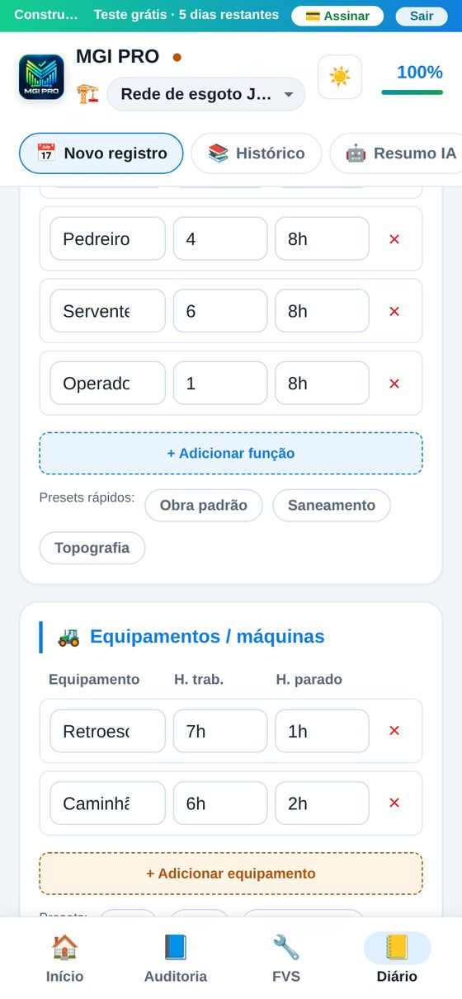
Outros atalhos do cartão
| Botão | O que faz |
|---|---|
| 📋 Repetir último dia | Copia equipe, equipamentos, turnos, responsável e nomes das assinaturas do último diário. As atividades são opcionais e vêm sem quantidade. |
| 🌤️ Clima automático | Preenche tempo, temperatura da manhã e da tarde e horas de chuva pela sua localização ou pelo trecho da obra. |
| 🔗 Puxar do app | Traz FVS, liberações, recebimentos de material e DDS registrados no mesmo dia. |
| 📷 IA pelas fotos | Depois de adicionar as fotos do dia, a IA descreve as atividades e aponta riscos visíveis. |
| 📝 Redigir observações | A IA escreve o resumo técnico do dia com o que já foi preenchido. |
Histórico, resumo e exportação
- Histórico: lista os diários da obra. Toque em um para abrir e editar.
- Resumo IA: gera um resumo do período para a reunião de obra.
- Exportar: selecione os dias, escolha incluir resumo e fotos e toque em Gerar PDF.
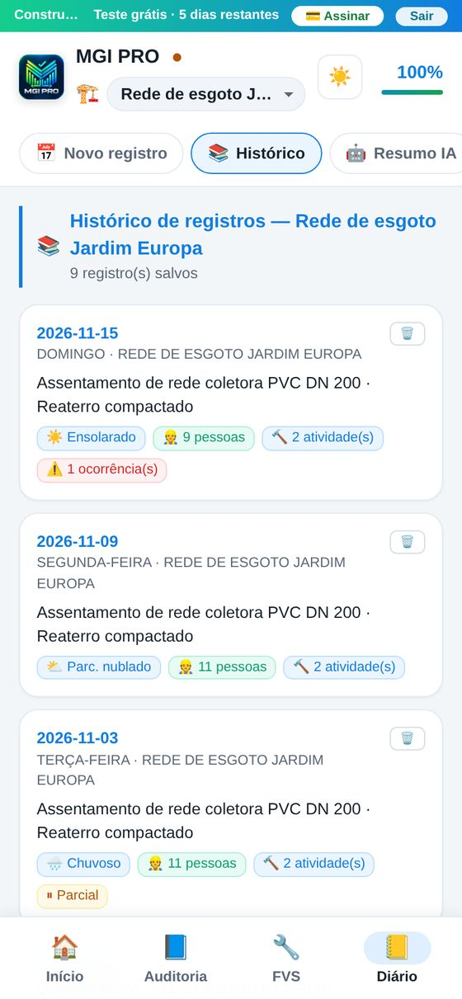
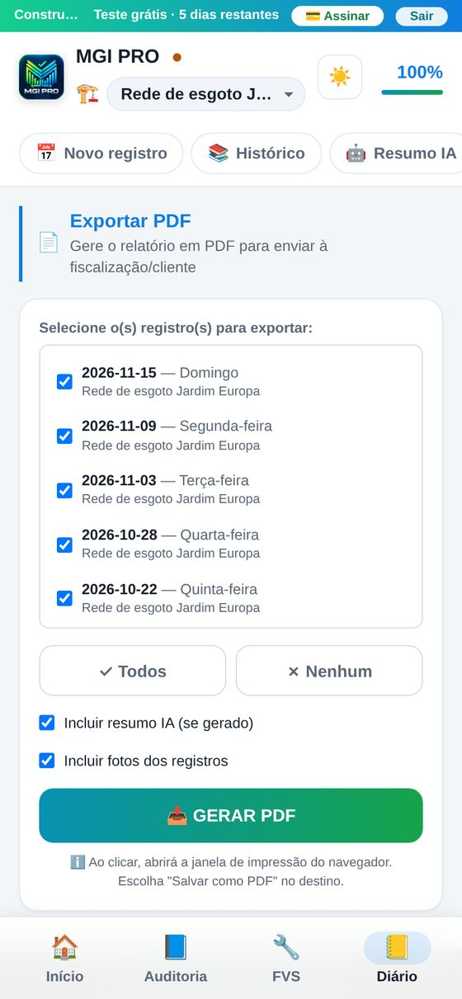
Tudo que a IA preenche tem o botão Desfazer e nada do que você digitou é apagado.
O rascunho é salvo sozinho no aparelho a cada 5 segundos. Se o celular travar, ao abrir de novo o diário continua de onde parou.
Voz e IA precisam de internet. Sem sinal, o preenchimento manual funciona normalmente.
🔧FVS: ficha de verificação de serviço
Escolher o serviço
- Toque em FVS na barra de baixo.
- Escolha a categoria (Saneamento ou Construção civil) e o serviço.
- Preencha a identificação: obra, responsável técnico, data e trecho, estaca ou local. Obra e responsável já vêm preenchidos.
Inspecionar falando
- No cartão Inspeção por voz, toque em 🎤 Falar a inspeção.
- Fale o que viu, por exemplo: "Trecho PV-08 ao PV-09. Locação ok. Fundo da vala com água acumulada, não conforme. O resto conforme."
- Toque em ✨ Preencher a FVS. A IA marca C, NC ou NA em cada item e escreve as observações.
- As não conformidades já saem com a ação corretiva 5W2H gerada pela IA.
- Confira, adicione fotos com 📷 Foto em cada item e toque em 💾 Salvar FVS.
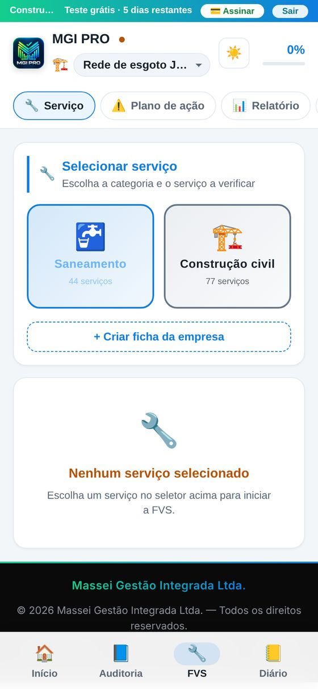
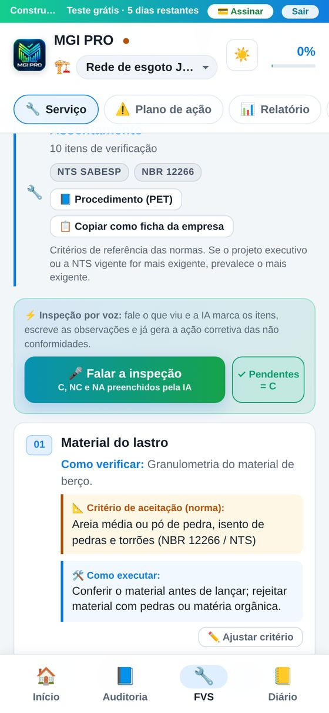
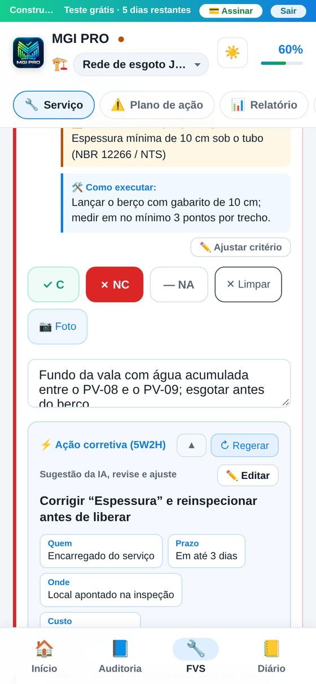
Preencher à mão
- Em cada item, toque em ✓ C, ✗ NC ou — NA. Leia Como verificar e o critério de aceitação.
- Em NC, descreva o desvio (mínimo de 10 caracteres) e toque em ⚡ Gerar ação corretiva com IA.
- ✓ Pendentes = C marca como conforme os itens sem resposta. Use só depois de verificar em campo: o aplicativo pede confirmação.
Fichas e critérios da empresa
- 📘 Procedimento (PET): abre o passo a passo de execução do serviço, com opção de PDF.
- Ajustar critério: adapta a tolerância de um item ao projeto ou à especificação do contrato.
- Copiar como ficha da empresa ou + Criar ficha da empresa: cria fichas próprias, com seus itens e critérios.
Plano de ação: ações corretivas das FVS, com responsável, prazo e situação.
Relatório: resumo da FVS para PDF.
Histórico: FVS salvas, para abrir, editar ou baixar.
⚠️Plano de ação e ações corretivas
Toda não conformidade de FVS ou auditoria gera uma ação. O plano de ação reúne todas, com a situação de cada uma.
- Toque na barra de ações pendentes da tela inicial, ou abra a aba Plano de ação na FVS ou na Auditoria.
- Abra a ação para ver o 5W2H: o quê, por quê, quem, quando, onde, como e quanto.
- Defina o Responsável (quem vai resolver) e o Prazo.
- Atualize a Situação: aberta, em andamento, em verificação ou fechada. Ações com foto podem ser analisadas com 🤖 Analisar a foto com IA.
- Depois de verificar a correção em campo, toque em ✓ Marcar como fechada.
Ações perto do vencimento aparecem no alto da tela inicial. Ative os avisos no celular em Ferramentas › Ativar avisos no celular.
Em Relatórios › Planilha de ações você baixa todas as ações em CSV para Excel.
🚧Liberação de frente
Registra que documentos, segurança, meio ambiente, qualidade e comunicação estavam em ordem antes de iniciar um serviço.
- Na tela inicial, toque em 🚧 Liberação de frente e depois em + Nova liberação.
- Toque em 🎤 Falar a vistoria da frente e conte o que conferiu, ou preencha à mão.
- A IA preenche frente, endereço e serviço, marca a lista de verificação, escreve as pendências e sugere o parecer.
- Confira o parecer: liberada, liberada com ressalvas ou não liberada.
- Colha as assinaturas e toque em Salvar.
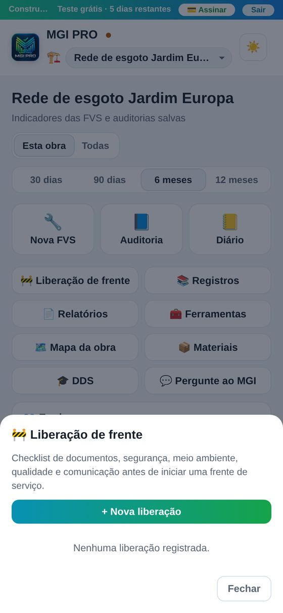
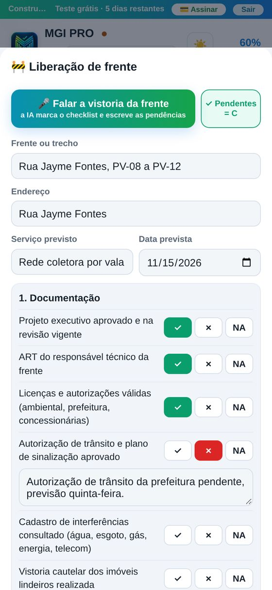
📦Recebimento de material e rastreabilidade
Registrar um recebimento
- Na tela inicial, toque em 📦 Materiais e depois em + Registrar recebimento.
- Toque em 📷 Ler a nota fiscal e fotografe a nota ou o DANFE inteiro, reto e com boa luz.
- A IA preenche material, fabricante, lote, nota fiscal, data, quantidade, unidade e fornecedor. Se a nota tiver vários itens, marque os que entram no controle.
- Faça a inspeção e escolha o resultado: aprovado, aprovado com ressalva ou reprovado.
- Se preferir, toque em 🎤 Falar e conte o recebimento, por exemplo: "30 barras de PVC 200 da Tigre, nota 45872, lote 2611A, aprovado".
- Toque em Salvar.
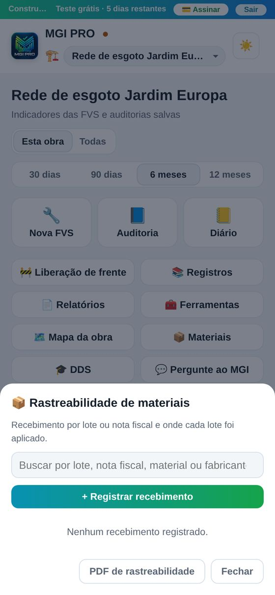
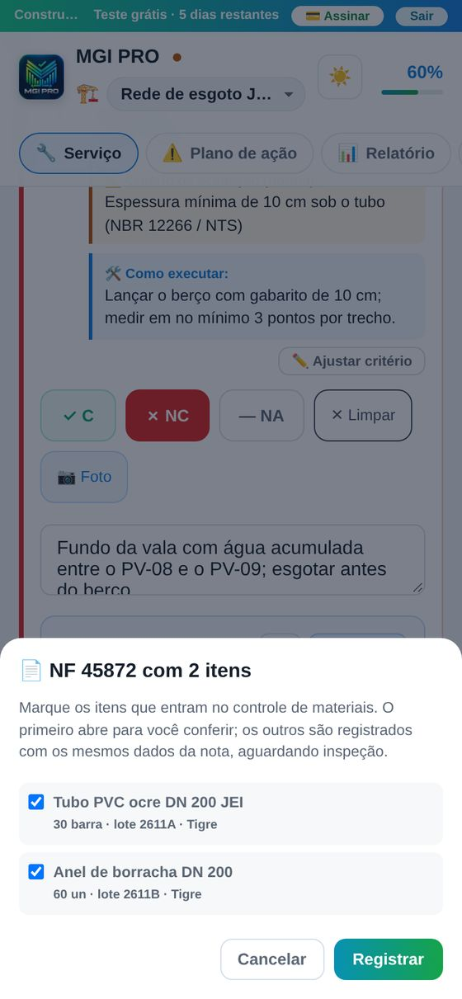
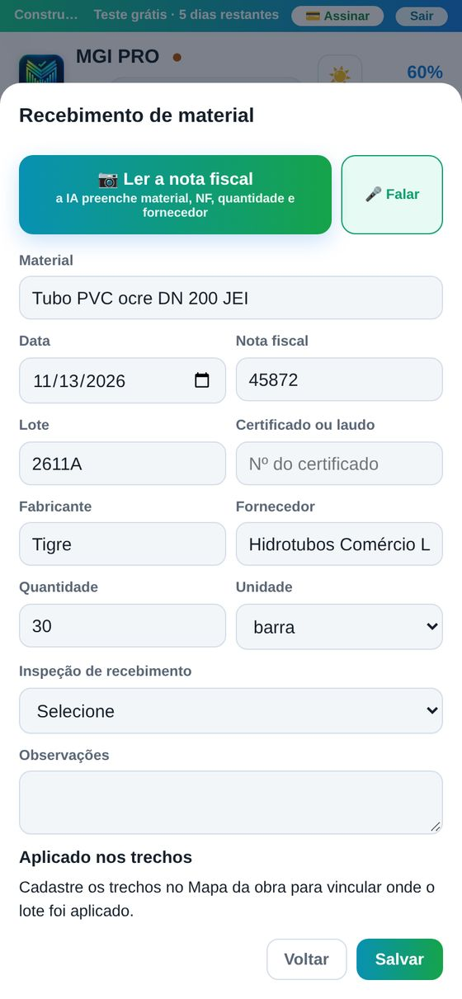
Vincular ao local de aplicação
- No próprio recebimento, em Aplicado nos trechos, marque onde o lote foi usado. Em edificação, escolha torre, pavimento ou unidade.
- Use a busca por lote, nota, material ou fabricante para saber em segundos onde um lote está.
- PDF de rastreabilidade gera o relatório para a fiscalização ou para uma investigação.
🎓DDS
- Na tela inicial, toque em 🎓 DDS e depois em + Novo DDS.
- Escolha o tipo: qualidade, segurança do trabalho, meio ambiente ou integrado.
- Toque em 🎤 Falar o tema, a frente e o serviço, ou escreva o tema. Também dá para montar a partir de um serviço da FVS.
- Toque em Gerar com IA. O aplicativo monta os pontos para falar e as perguntas de múltipla escolha.
- Faça o DDS com a equipe e marque as respostas das perguntas.
- Na lista de presença, use 🎤 Ditar nomes, 📷 Foto da lista (lê a lista em papel) ou 👥 Equipe do último.
- Cada participante assina no aparelho. O ministrante assina por último. Toque em Concluir DDS e gere o PDF quando precisar.
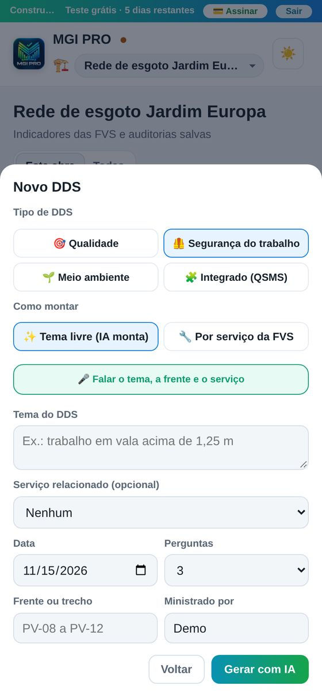
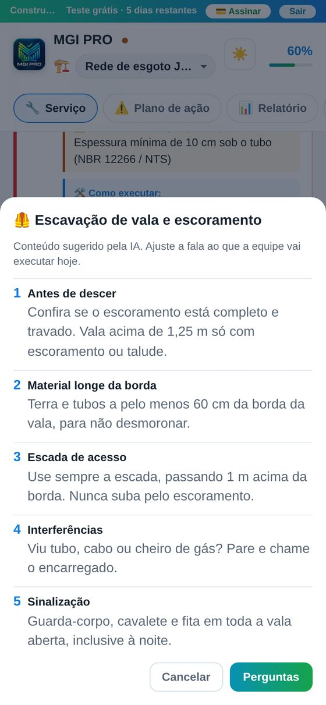
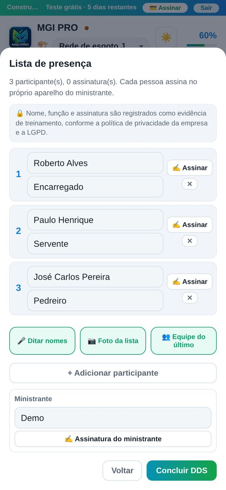
📘Auditorias ISO e PBQP-H
- Toque em Auditoria na barra de baixo.
- Na aba Identificação, escolha as normas auditadas: ISO 9001, PBQP-H/SiAC, ISO 14001 e ISO 45001. A auditoria integrada percorre as cláusulas de cada norma.
- Preencha empresa, processo, responsável e auditor e toque em Iniciar checklist.
- Em cada cláusula, toque em 🎤 Falar as evidências e conte o que verificou. A IA marca os requisitos, escreve as constatações e gera a ação corretiva das não conformidades. Vale para qualquer cláusula, não só a aberta.
- Use os botões de cláusula (4, 5, 6...) ou Próxima para navegar. ✓ Pendentes = C marca o que faltou na cláusula aberta, com confirmação.
- Ao final, toque em 💾 Salvar auditoria e veja o Relatório e o Plano de ação.
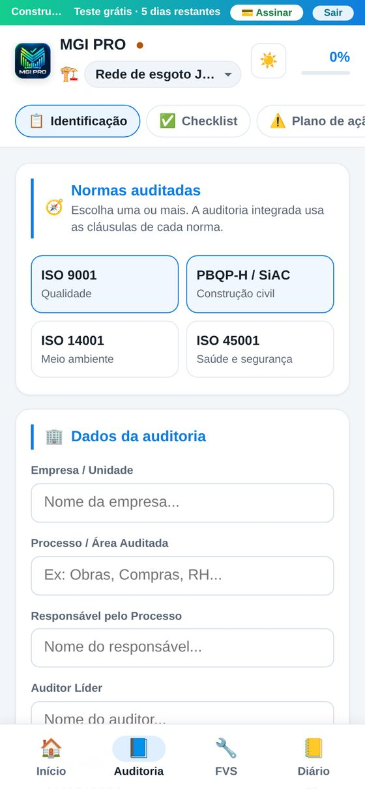
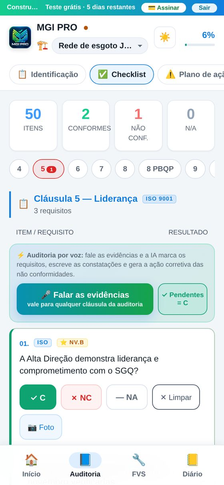
🗺️Mapa da obra e mapa do prédio
Obra linear (saneamento)
- Na tela inicial, toque em 🗺️ Mapa da obra.
- Cadastre os trechos com + Novo trecho ou + Vários de uma vez: informe o prefixo e a sequência (PV-, do 1 ao 20) e os trechos PV-01 a PV-02, PV-02 a PV-03 e seguintes são criados juntos. Depois marque as posições no mapa.
- Toque em um trecho para ver FVS, liberações, materiais aplicados e não conformidades daquele local.
- PDF da situação gera o mapa com o andamento por trecho. O QR do trecho pode ser impresso e fixado em campo.
Edificação (residencial ou comercial)
- No Mapa, escolha Edificação como tipo de obra. Você pode trocar depois em trocar tipo de obra.
- Toque em + Torre ou bloco, informe o nome, os pavimentos e as unidades por andar. O aplicativo cria tudo de uma vez (7º andar, 4 por andar: 71, 72, 73, 74). Áreas comuns como térreo, cobertura e fachada também entram.
- A grade de unidades mostra a situação de cada apartamento por cor: planejado, liberado, em execução, inspecionado, com não conformidade ou concluído.
- O Quadro de serviços cruza unidades e serviços. PDF do quadro gera o documento para a reunião.
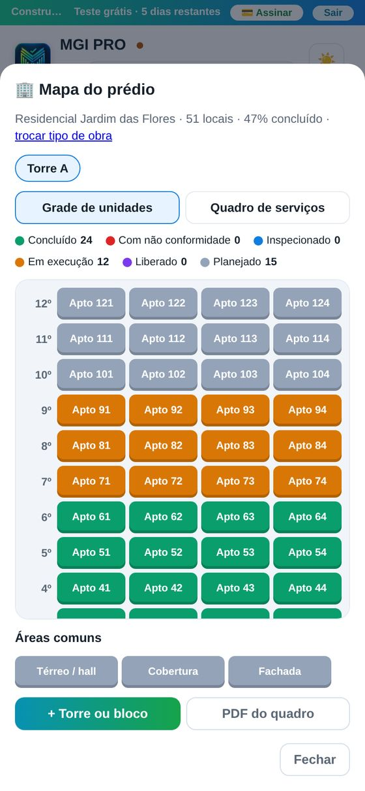
📄Relatórios e registros
Na tela inicial, toque em 📄 Relatórios:
| Opção | O que gera |
|---|---|
| 📊 Indicadores do período | Painel com decisões, gráficos e ações pendentes do período escolhido na tela inicial |
| 🗓️ Relatório mensal da qualidade | Mês fechado com NCs abertas e fechadas, diários e fotos, com assinaturas de elaboração, revisão e aprovação. Opção de pacote completo com todas as FVS, auditorias e diários do mês |
| 📷 Relatório fotográfico | Fotos de FVS, auditorias e diários por período, com legenda e carimbo |
| 📚 Registros | Busca e PDF de qualquer FVS, auditoria ou diário, por tipo, obra, período e texto |
| 📥 Planilha de ações | Todas as ações corretivas em CSV para Excel |
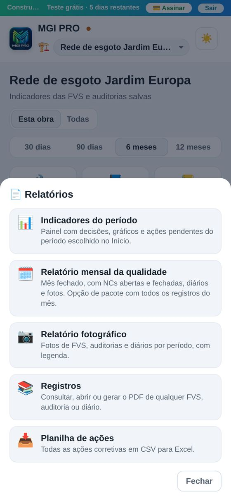
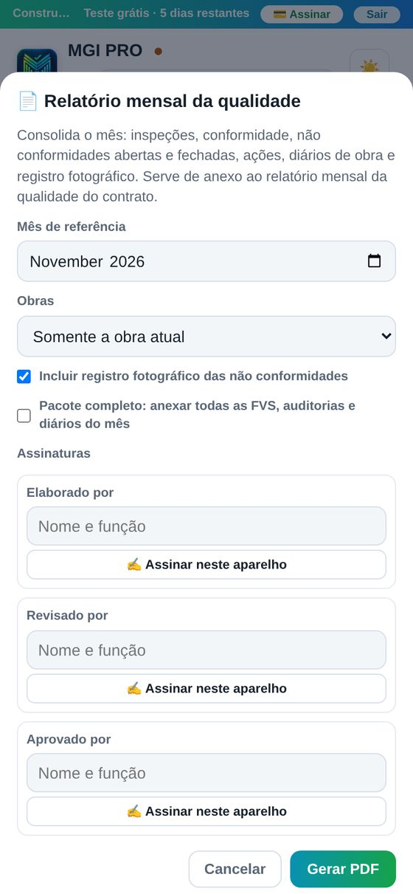
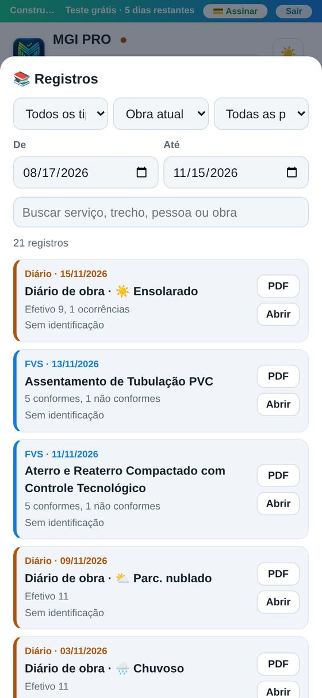
No dia 1 de cada mês, o MGI PRO envia um resumo do mês anterior para os e-mails cadastrados em Empresa.
🧰Ferramentas e Pergunte ao MGI
| Ferramenta | Para que serve |
|---|---|
| 💬 Pergunte ao MGI | Pergunte sobre a obra em linguagem natural: ações vencidas, situação dos trechos, onde foi aplicado um lote, normas e boas práticas. As respostas usam os dados da obra |
| 🤖 Resumo da semana | Situação, pontos críticos e ações recomendadas para a reunião de obra |
| 🔎 Causa raiz das reincidências | 5 porquês e ações preventivas para o que se repete |
| 🗂️ Documentos e treinamentos | ART, licenças, ASO, treinamentos de NR e calibrações, com aviso de vencimento |
| 🔔 Ativar avisos no celular | Ações vencendo, diário pendente e documentos a vencer |
| 🕓 Registro de alterações | Quem fez o quê e quando |
| 💾 Exportar e restaurar backup | Arquivo com todos os dados da empresa, para guardar ou restaurar |
| 🎓 Ver o tutorial | Passo a passo rápido das principais funções |
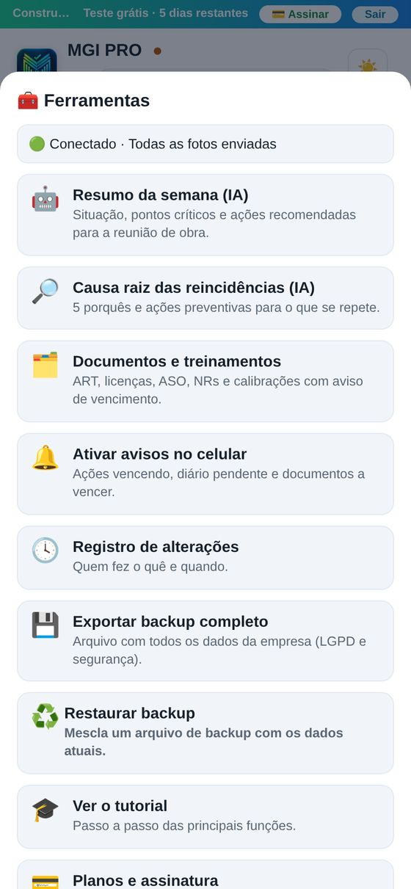
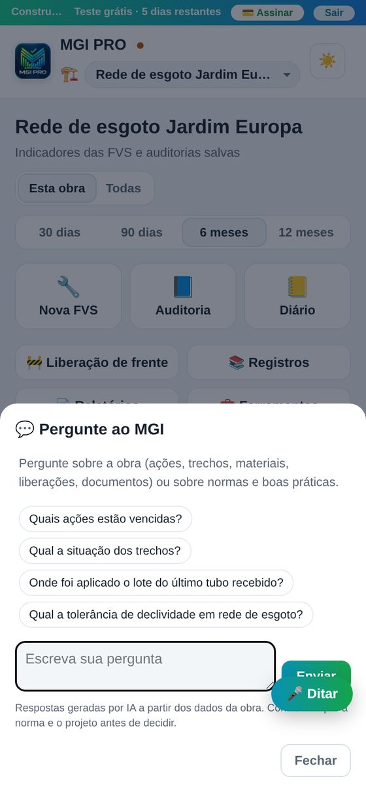
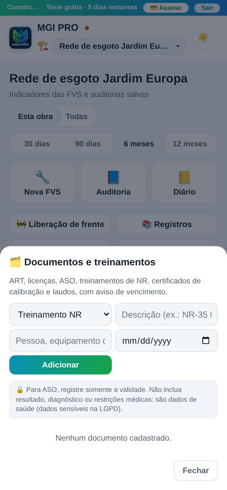
Para ASO, registre somente a validade. Não inclua resultado, diagnóstico ou restrições médicas, que são dados sensíveis pela LGPD.
📶Sem internet, fotos e sincronização
- Os registros ficam salvos no aparelho e são enviados para a nuvem quando há sinal.
- Em Ferramentas, a faixa no alto mostra se você está conectado e quantas fotos aguardam envio. Toque em Enviar agora quando tiver sinal.
- Voz, inteligência artificial, clima automático e leitura de nota fiscal precisam de internet.
- Mantenha o aplicativo atualizado: quando sair uma versão nova, feche e abra o aplicativo ou recarregue a página.
🤖Boas práticas com voz e inteligência artificial
- A IA preenche, quem confere e assina é você. Revise sempre antes de salvar.
- Fale em lugar silencioso quando possível e diga local e quantidade: "42 metros do PV-08 ao PV-09" é melhor do que "fizemos a rede".
- Não marque nada como conforme sem ter verificado em campo.
- Se a IA errar, toque em Desfazer ou corrija o campo. Nada do que você digitou é apagado.
- Não dite dados pessoais desnecessários (documentos, saúde) nas observações.
Cota de IA do plano
- Cada uso é um preenchimento feito pela IA: um diário contado, uma FVS falada, uma nota fiscal lida, um DDS montado.
- O teste grátis inclui 50 usos. Os planos incluem por mês: Essencial 300, Profissional 1.000 e Contrato 3.000. A cota renova no dia 1º.
- Veja quanto já usou em Ferramentas › Uso da IA. O app avisa quando passar de 80% e de 90%.
- Se a cota acabar, compre um pacote avulso no mesmo lugar: 300 usos por R$ 97 ou 1.000 usos por R$ 247. Os usos extras não vencem e só são gastos depois da cota do mês.
- Sem IA, o app continua funcionando: você preenche tocando nos campos, como antes.
❓Perguntas frequentes
| Pergunta | Resposta |
|---|---|
| O microfone não abre. | Autorize o microfone no navegador (cadeado ao lado do endereço › Microfone › Permitir). No iPhone, use o Safari atualizado. |
| O clima automático não funciona. | Autorize a localização ou cadastre o trecho com coordenadas no Mapa da obra. |
| Não consigo criar outra obra. | O número de obras depende do plano. Veja em Ferramentas › Planos e assinatura. |
| A IA parou de preencher. | A cota do mês pode ter acabado. Veja em Ferramentas › Uso da IA e compre um pacote avulso, ou aguarde o dia 1º. |
| O fiscal pode alterar algo? | Não. O acesso de fiscalização é só de consulta. |
| Troquei de celular. Perdi os dados? | Não. Entre com o mesmo e-mail e os dados sincronizados aparecem. |
| Como tiro o logo do contratante dos PDFs? | Em Empresa, remova o segundo logo ou o logo da obra. |
| Onde vejo quem alterou um registro? | Em Ferramentas › Registro de alterações. |
| Preciso de ajuda. | Fale com a Massei: (11) 97494-6171 · mgipro.app |
Nada encontrado. Tente outra palavra ou fale com a Massei: (11) 97494-6171.